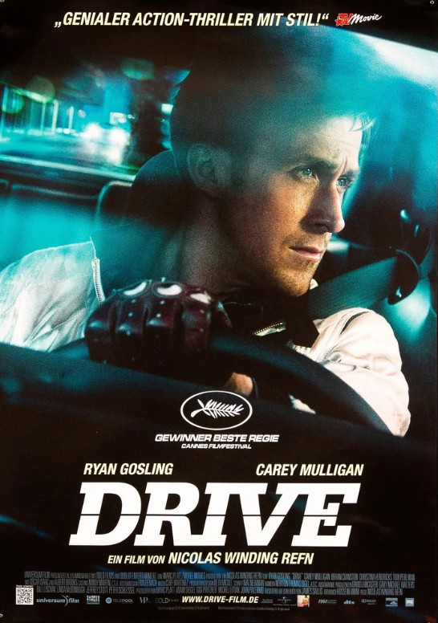

Yönetmen: Nicolas Winding Refn
Oyuncular: Ryan Gosling, Carey Mulligan, Bryan Cranston
Konu
Gece yasa dışı sürücülük yapan bir adam, karmaşık bir soygun planına dahil olur. Sessiz başrol ve etkileyici görselleriyle dikkat çeker.
🎥 Fragman
🎵 Soundtrack
Elektronik müzik sevenler için şahane. "Nightcall" ve "A Real Hero" öne çıkar.